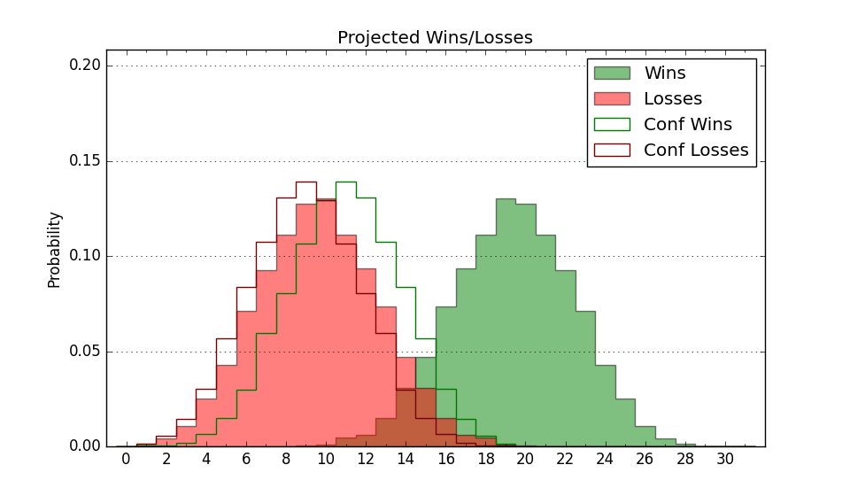

| Home | Game Probabilities | Conferences | Preseason Predictions | Odds Charts | NCAA Tournament |
| City: | Bloomington, Indiana | |
| Conference: | Big Ten (1st)
| |
| Record: | 0-0 (Conf) 4-0 (Overall) | |
| Ratings: | Comp.: 21.4 (26th) Net: 22.3 (37th) Off: 112.6 (72nd) Def: 90.3 (25th) SoR: 56.4 (44th) |
| Remaining | ||||||
|---|---|---|---|---|---|---|
| Date | Opponent | Win Prob | Pred. | |||
| 11/27 | (N) Louisville (56) | 64.6% | W 73-69 | |||
| 12/3 | Sam Houston St. (115) | 91.3% | W 84-67 | |||
| 12/6 | Miami OH (235) | 96.6% | W 85-61 | |||
| 12/9 | Minnesota (102) | 89.3% | W 74-59 | |||
| 12/13 | @ Nebraska (38) | 40.7% | L 70-73 | |||
| 12/21 | Chattanooga (204) | 95.8% | W 85-63 | |||
| 12/29 | Winthrop (179) | 94.8% | W 85-63 | |||
| 1/2 | Rutgers (80) | 83.9% | W 78-66 | |||
| 1/5 | @ Penn St. (40) | 42.2% | L 76-79 | |||
| 1/8 | USC (64) | 79.8% | W 79-69 | |||
| 1/11 | @ Iowa (49) | 47.0% | L 77-78 | |||
| 1/14 | Illinois (23) | 62.2% | W 78-75 | |||
| 1/17 | @ Ohio St. (19) | 27.7% | L 69-76 | |||
| 1/22 | @ Northwestern (46) | 44.6% | L 67-69 | |||
| 1/26 | Maryland (28) | 65.0% | W 70-65 | |||
| 1/31 | @ Purdue (20) | 28.0% | L 69-76 | |||
| 2/4 | @ Wisconsin (30) | 36.1% | L 74-78 | |||
| 2/8 | Michigan (52) | 76.0% | W 81-72 | |||
| 2/11 | @ Michigan St. (39) | 40.7% | L 68-71 | |||
| 2/14 | UCLA (17) | 55.1% | W 66-65 | |||
| 2/23 | Purdue (20) | 57.0% | W 74-72 | |||
| 2/26 | Penn St. (40) | 71.3% | W 81-74 | |||
| 3/1 | @ Washington (84) | 63.6% | W 76-72 | |||
| 3/4 | @ Oregon (31) | 36.2% | L 73-77 | |||
| 3/8 | Ohio St. (19) | 56.6% | W 73-71 | |||
| Previous | Game Score | |||||
| Date | Opponent | Win Prob | Result | Off | Def | Net |
| 11/6 | SIU Edwardsville (269) | 97.7% | W 80-61 | -10.1 | 1.0 | -9.1 |
| 11/10 | Eastern Illinois (331) | 98.7% | W 90-55 | -0.3 | 3.6 | 3.3 |
| 11/16 | South Carolina (95) | 87.8% | W 87-71 | 10.7 | -4.0 | 6.7 |
| 11/21 | UNC Greensboro (109) | 90.4% | W 69-58 | -14.6 | 8.5 | -6.0 |
| Stats & Trends | |||||
|---|---|---|---|---|---|
| Current | Day | Week | Month | Season | |
| Composite | 21.4 | +0.1 | -0.5 | +0.4 | +0.4 |
| Comp Rank | 26 | -- | -1 | -3 | -3 |
| Net Efficiency | 22.3 | +0.3 | -3.5 | -- | -- |
| Net Rank | 37 | -3 | -11 | -- | -- |
| Off Efficiency | 112.6 | +0.7 | -5.7 | -- | -- |
| Off Rank | 72 | +6 | -29 | -- | -- |
| Def Efficiency | 90.3 | -0.4 | +2.2 | -- | -- |
| Def Rank | 25 | -2 | +17 | -- | -- |
| SoS Rank | 326 | -7 | -11 | -- | -- |
| Exp. Wins | 19.4 | -0.3 | -0.6 | -0.3 | -0.3 |
| Exp. Conf Wins | 11.0 | -0.3 | -0.7 | -0.6 | -0.6 |
| Conf Champ Prob | 7.9 | -3.1 | -5.8 | -3.1 | -3.1 |

| Advanced Stats | ||
|---|---|---|
| Stat | Value | Rank |
| Off Eff FG % | 0.610 | 12 |
| Off Ast Ratio | 0.201 | 8 |
| Off ORB% | 0.263 | 235 |
| Off TO Rate | 0.170 | 278 |
| Off FT Ratio | 0.257 | 321 |
| Def Eff FG % | 0.426 | 24 |
| Def Ast Ratio | 0.118 | 58 |
| Def ORB% | 0.287 | 184 |
| Def TO Rate | 0.156 | 154 |
| Def FT Ratio | 0.245 | 37 |